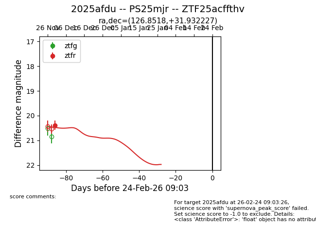
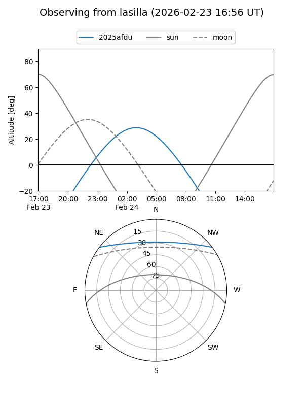
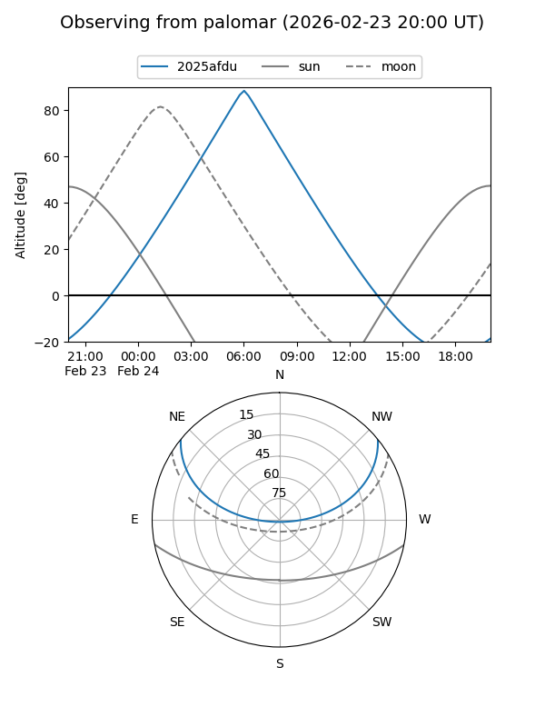
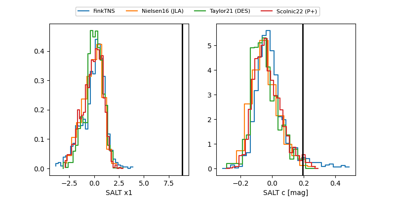

2025afdu
Target 2025afdu at 2025-12-18 11:17
Aliases and brokers:
FINK: fink-portal.org/ZTF25acffthv
Lasair: lasair-ztf.lsst.ac.uk/objects/ZTF25acffthv
ALeRCE: alerce.online/object/ZTF25acffthv
TNS: wis-tns.org/object/2025afdu
YSE: ziggy.ucolick.org/yse/transient_detail/2025afdu
alt names
ZTF25acffthv (ztf,fink_ztf)
2025afdu (tns,yse)
Coordinates:
equatorial (ra, dec) = 126.8518,+31.93223
equatorial (HMS+DMS) = 08:27:24.44,+31:55:56.02
galactic (l, b) = (190.9246,+33.25027)
Photometry
last ztfr=20.38
1 ztfr detections
Lightcurve

Visibility


Additional plots
